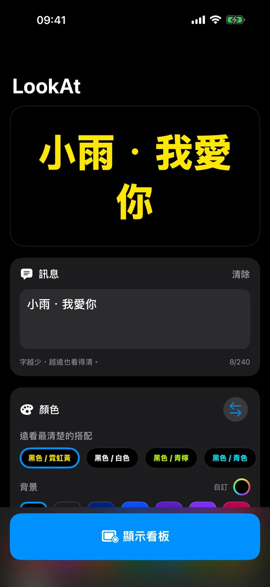
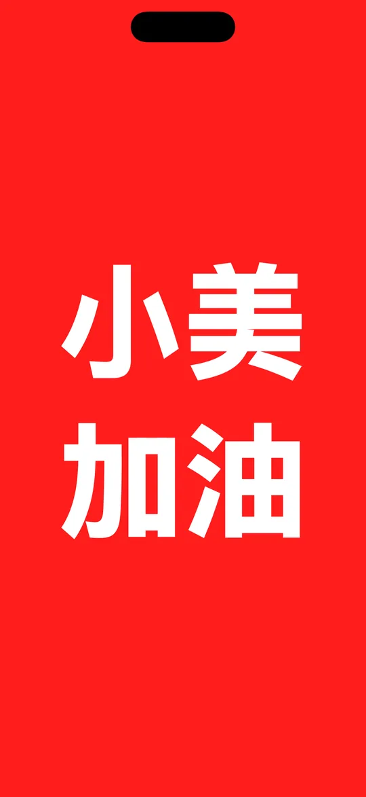
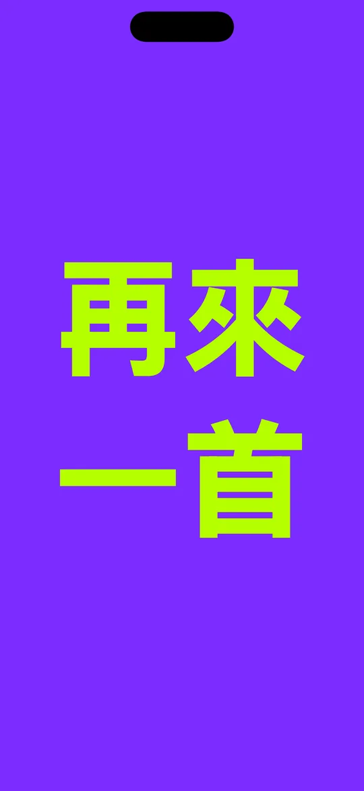
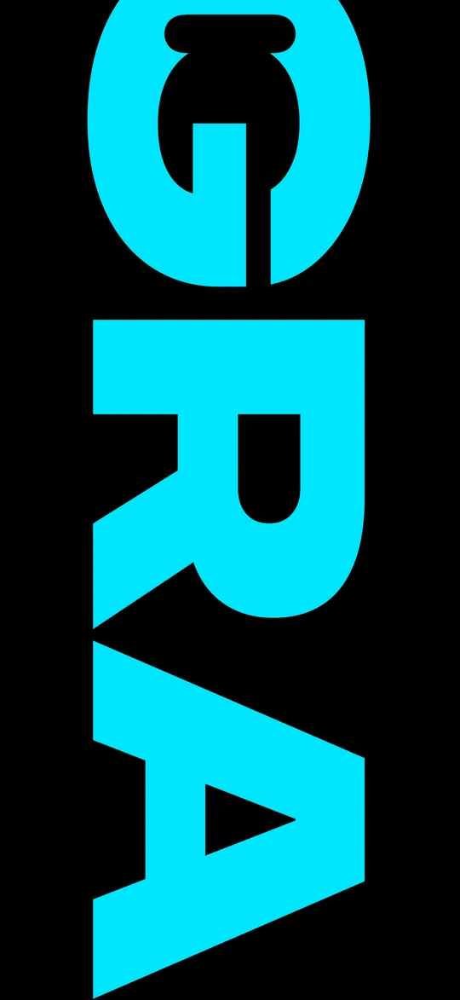

量過的顏色
真的
看得清的搭配
真實的 WCAG 對比度，在燈暗下來之前就檢查好。
把手機舉起來
輸入文字，選兩種顏色，舉起來。
把手機舉起來，讓人看見你。LookAt 把螢幕變成一塊看板，字大到從場地最後一排也讀得出來：輸入訊息，選兩種顏色，舉起來。
免費 · iPhone 和 iPad · iOS 18 或以上
決定距離的是字高和對比度，而不只是亮度。LookAt 以大寫字高決定每一種字體的大小，所以無論你選哪一種，文字佔螢幕的比例都一樣。它還會測量你選的兩種顏色之間真實的 WCAG 對比度：在你帶著誰也看不清的配色走進昏暗場地之前就提醒你，配色確實處在臨界值時還會加一圈光暈。

量過的顏色
真實的 WCAG 對比度，在燈暗下來之前就檢查好。
點陣
不是字型：每個筆畫都是單獨點亮的燈。

背景15色 · 文字14色
七種字體，都為遠距離而選。

捲動 · 固定 · 閃爍
最多 240 個字元，速度由你決定。

文字大小
把文字大小拉到100%，超大字滾動而過。
無需帳號。沒有廣告。不做追蹤。完全不連網：LookAt 從來沒有請求過網路連線，所以你輸入的內容不會離開手機。免費，裡面沒有任何要買的東西。
關於手機能做到什麼，說一句實話：螢幕很亮，但它不是大螢幕。在直射陽光下，或者超過幾十公尺的距離，再好的配色也會輸。LookAt 最擅長的場合是室內、天黑之後、以及人群之中——入境大廳、演唱會、終點線、學校成果發表。
今晚的演唱會，想點一首歌？被人群淹沒了？寫在 LookAt 上，舉起手機，讓他看見你。
免費 · iPhone 和 iPad · iOS 18 或以上